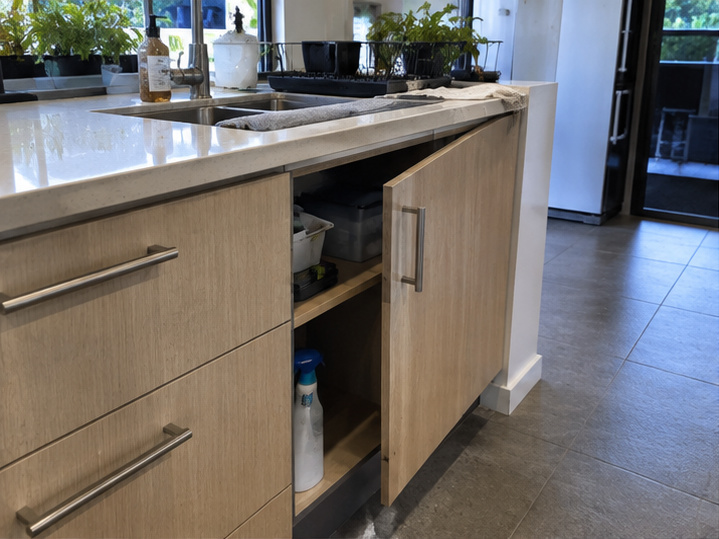
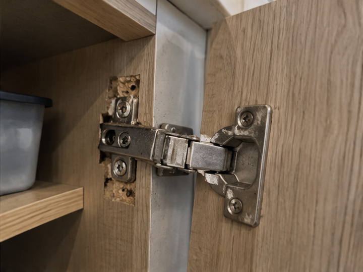
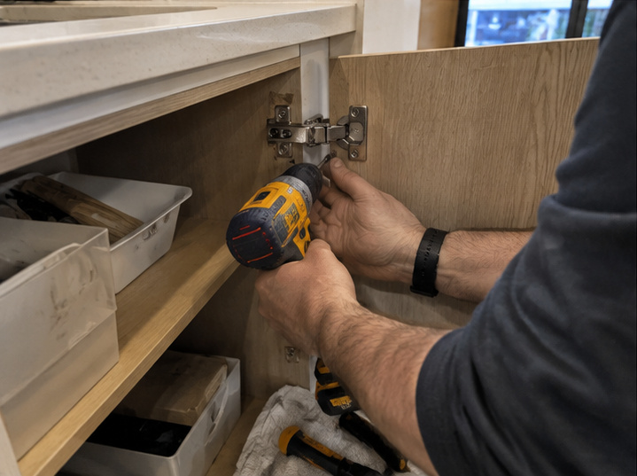
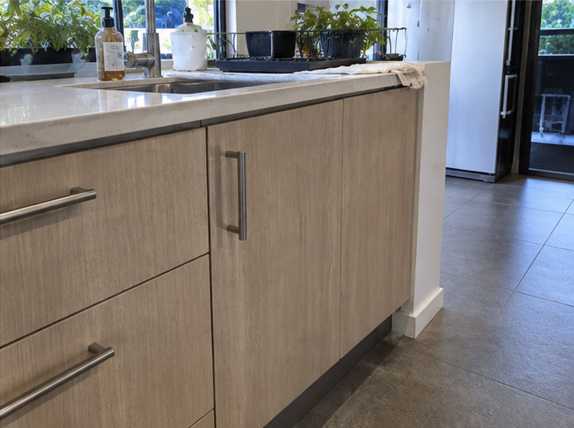

Work example
Cupboard hinge pulled-out repair & cabinet door alignment
A kitchen cabinet-door repair sequence showing a pulled-out hinge fixing and cabinet door alignment.
The work shown
Cupboard hinge repair and cabinet door alignment
These images show a kitchen cabinet door with a damaged hinge fixing, through repair work and completed alignment. Relevant enquiry contexts include a cupboard hinge pulled out, cabinet hinge screws stripped in particleboard and cabinet door alignment. Clear photos of the hinge, screw holes, cabinet panel and door position help us understand the repair needed.
Project gallery
Cupboard hinge and cabinet alignment details shown




Start your request
Tell us about the cabinet issue
Share the cabinet location, hinge concern and Perth property location to start the conversation.